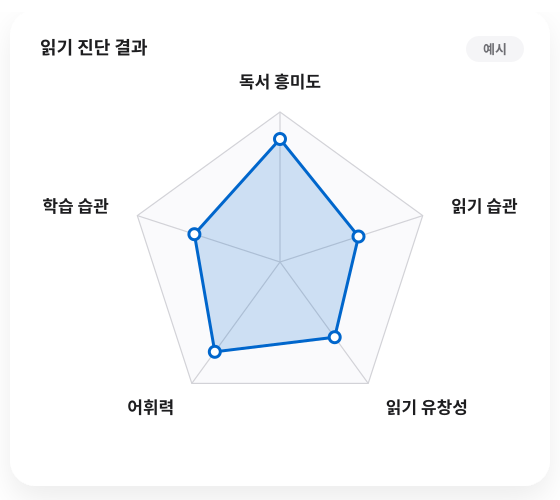

5가지 핵심 진단
학생의 ‘읽는 방법’을 진단하고, 무엇을 어떻게 훈련해야 하는지 찾아냅니다.

- 01
독서 흥미도
책에 대한 관심과 독서 동기, 독서 태도를 확인합니다.
- 02
읽기 습관
대충 훑어 읽는지, 건너뛰는지, 되읽기가 잦은지 등 실제 읽기 습관을 살펴봅니다.
- 03
읽기 유창성
글을 얼마나 자연스럽고 안정적으로 읽으며 책을 끝까지 읽어낼 능력이 있는지를 확인합니다.
- 04
어휘력
글의 내용을 이해하는 데 필요한 어휘의 뜻과 문맥 이해 능력을 진단합니다.
- 05
학습 습관
집중력, 학습 계획, 자기 주도성, 이해 · 기억 · 복습 습관을 점검합니다.
DIAGNOSIS SYSTEM
진단에서
진단에서
끝나지 않습니다
진단 결과를 바탕으로 아이에게 필요한 읽기 훈련을 찾아 맞춤형 훈련 방향을 설계합니다.
- 01
진단
- 02
분석
- 03
훈련
- 04
변화 측정
읽기의 문제를 정확히 찾아내고, 훈련을 통해 제대로 읽고, 정확하게 이해하고, 오래 기억하는 읽기 능력으로 바꾸는 것이 나비독서 진단 시스템의 목적입니다.
WHY DIAGNOSIS
진단이 달라야
진단이 달라야
훈련이 달라집니다
학생들마다 읽는 수준과 습관은 다릅니다.
같은 책을 읽어도
누군가는
핵심을 놓치고
누군가는
읽은 내용을 기억하지 못하며
누군가는
문제의 조건을 놓칩니다
MDR 나비독서는 단순히 얼마나 많이 읽었는지를 측정하지 않습니다.
학생의 ‘읽는 방법’을 진단하고, 무엇을 어떻게 훈련해야 하는지 찾아냅니다.
정확한 진단에서 읽기 능력과 성적의 변화가 시작됩니다.
READING CHECK
우리 아이는
우리 아이는
지금 어떻게 읽고 있을까요?
독서량보다 먼저 아이의 ‘읽는 방법’을 확인해 보세요.